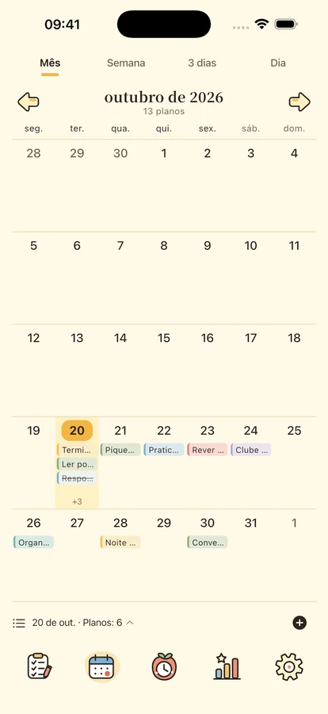
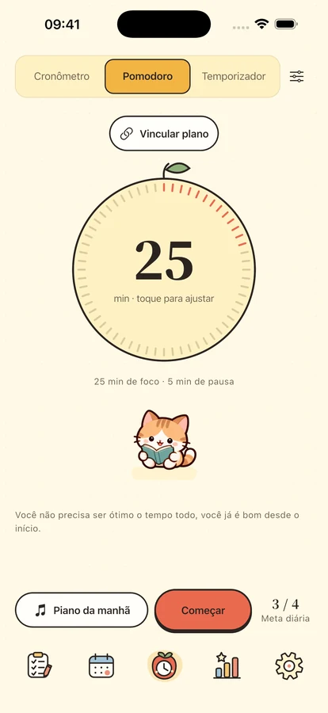
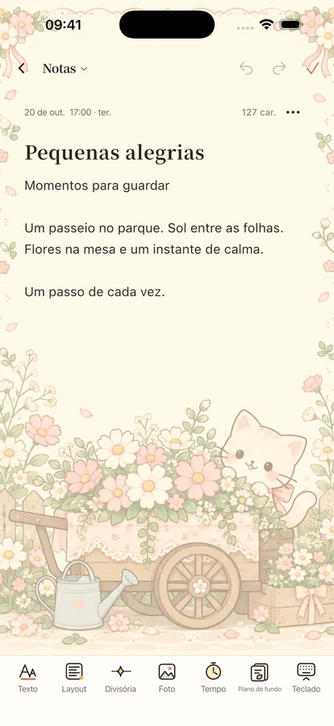

Um pouco de calma.
Um pouco de companhia.
Organize planos, concentre-se numa coisa e guarde ideias e datas especiais com pequenos companheiros.
Para iPhone e iPad · Lançamento em preparação
Uma coisa de cada vez.
Comece por um pequeno passo
Espaço para planos, tempo e um pouco de incentivo.

Um lugar para cada plano.
Separe importância e urgência com quatro quadrantes. Veja dias, semanas e meses no calendário e na linha do tempo. Inclui repetições, subtarefas e lembretes locais.
Tempo para o que está à sua frente.
Pomodoro, contagem decrescente ou cronómetro com 8 músicas offline e 11 sons ambientes. Quatro companheiros e um relógio de abas acompanham o foco e o descanso. A biblioteca completa requer Plus ou o teste de três dias; uma música, um ambiente e o silêncio são gratuitos.


Guarde ideias e dias especiais.
Escreva notas com formatação, fotos e papéis e consulte por data ou categoria. Conte os dias até aniversários e eventos. Widgets de planos, calendário, foco, eventos e notas requerem iOS 17 ou posterior.
O seu dia a dia pertence-lhe.
As funções locais não exigem conta. As cópias na nuvem são manuais e a análise de utilização está desligada por predefinição. Exporte conteúdos e controle as opções de privacidade.
Privacidade